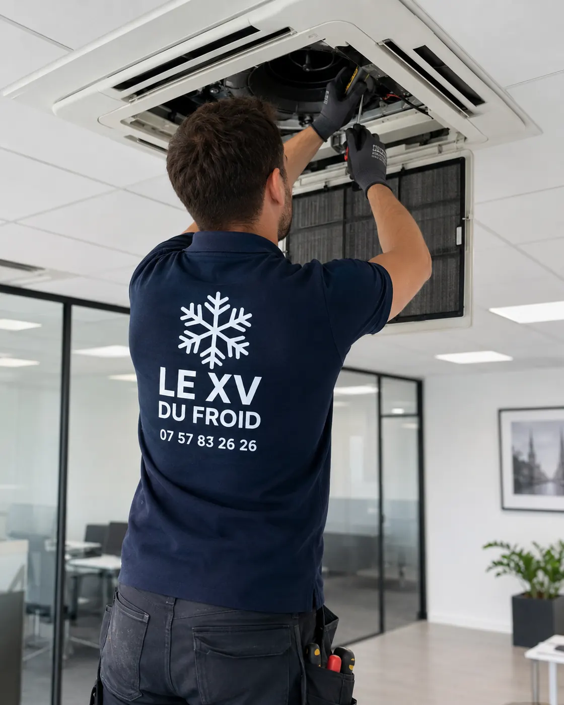

Entretien climatisation Chatou · 78400
Entretien climatisation à Chatou : pourquoi mai vaut mieux qu’août
Tout le monde pense à sa clim le premier jour de canicule, c’est-à-dire au pire moment. À Chatou comme ailleurs, l’entretien se place avant la saison : l’agenda est plus souple, et une pièce usée se remplace sans pression.
- Visite avant la saison chaude
- Filtres, évacuation, groupe extérieur
- Ce que vous pouvez faire vous-même

Le calendrier
Pourquoi le printemps est le bon moment.
Une clim qui a dormi tout l’hiver n’est pas dans le même état qu’une clim qu’on utilise tous les jours. Poussière dans les filtres, eau stagnante dans le bac, insectes dans le groupe extérieur : le printemps est le bon moment pour tout remettre d’aplomb.
Mai a un avantage simple : l’agenda est calme. On peut proposer un créneau qui vous arrange, ce qui devient rare dès les premières grosses chaleurs. Et si une pièce est à remplacer, il reste le temps de la commander sans souffrir.
Août, au contraire, est le mois des appels en panne. Un entretien à ce moment-là passe après les dépannages.
Ce que comprend la visite
Entretien climatisation Chatou : ce qu’on fait, point par point
Pour un entretien climatisation Chatou, on commence par un tour de l’installation : unité intérieure, groupe extérieur, liaisons, évacuation. Puis le filtre est lavé, la turbine inspectée, le bac et le tuyau d’évacuation dégagés.
Côté groupe extérieur, on retire feuilles et poussière, on contrôle la fixation, le ventilateur et les connexions. Les mesures de fonctionnement, soit températures de soufflage et intensité absorbée, sont notées.
Selon le matériel, un contrôle d’étanchéité du circuit complète la visite. On vous remet un compte rendu : ce qui a été fait, ce qui est à surveiller.

Nettoyage climatisation Chatou : ce que ça change vraiment
Un filtre encrassé réduit le débit d’air, fait forcer la turbine et finit par donner une odeur. Un bac sale peut faire proliférer des moisissures qui se retrouvent dans l’air de la pièce.
Le nettoyage d’une clim murale en profondeur demande de protéger la pièce, de déposer le capot et de traiter l’échangeur sans le déformer. C’est la partie qu’on ne fait pas soi-même.
- Filtre et turbine nettoyés
- Bac et évacuation dégagés
- Odeur traitée à la source
À faire soi-même
Le geste du dimanche : laver le filtre
Entre deux visites, le filtre est votre seule tâche. Ouvrez la façade, sortez-le, passez-le sous l’eau tiède avec un peu de savon doux, laissez-le sécher à l’air et remettez-le. Une fois par mois en saison d’usage, c’est suffisant.
À Chatou, avec les arbres des rues et des jardins, le groupe extérieur ramasse vite feuilles et pollen. Un coup de balai doux au pied du groupe, sans jet puissant, l’aide à respirer.
Ne touchez pas aux ailettes de l’échangeur : elles se plient au moindre effort.
Filtre : vous. Tout ce qui est derrière la façade ou le capot : le technicien.
Avant la visite
Ce qui rend le passage plus utile
Quelques minutes de préparation évitent de repasser.
- Dégager l’accès : meuble devant l’unité intérieure, encombrement près du groupe.
- Noter les défauts : bruit, odeur, goutte, voyant clignotant, même passager.
- Retrouver les papiers : facture de pose, carnet, références de l’appareil.
- Prévenir la copropriété : si le groupe est sur façade ou sur toit, qui a la clé ?
- Penser à tous les appareils : un multi-split compte plusieurs unités à passer.
Fréquence
À quel rythme revenir
Pour un logement utilisé en saison chaude, une visite par an suffit dans la plupart des cas. Pour un appareil qui chauffe aussi l’hiver, ou une pièce très sollicitée comme un bureau, on peut envisager deux passages.
Si l’appareil n’a jamais été entretenu, on le dit tel quel dans le compte rendu : la première visite est plus longue, les suivantes plus légères.
Questions
Entretien de clim à Chatou : vos questions
Pourquoi planifier l’entretien climatisation Chatou en mai ?
Parce que l’agenda est plus libre et qu’une pièce à remplacer se commande sans pression. En août, les dépannages passent en premier.
Quelle différence entre entretien et nettoyage climatisation Chatou ?
Le nettoyage fait partie de l’entretien. L’entretien ajoute les contrôles de fonctionnement, de l’évacuation, du groupe extérieur et parfois du circuit.
Mon entretien clim Chatou doit-il être annuel ?
Pour un usage courant, une fois par an est un bon rythme. Pour un usage intensif ou un local professionnel, on peut conseiller davantage.
Que faire si ma clim sent mauvais au démarrage ?
Lavez le filtre d’abord. Si l’odeur persiste, le bac ou l’échangeur sont encrassés et demandent une intervention.
L’entretien peut-il se faire par temps froid ?
Oui, le nettoyage et les contrôles ne dépendent pas de la température. Certaines mesures de fonctionnement se font mieux en saison chaude.
Dois-je être présent pendant la visite ?
Il faut un accès à l’unité intérieure et au groupe extérieur. Si quelqu’un d’autre peut ouvrir, un compte rendu écrit vous sera remis ensuite.
Dans votre ville
Les autres services à Chatou
Un besoin différent, une page différente : dépannage, entretien, installation ou urgence.
Autour de chez vous
Entretien de climatisation dans les villes voisines
Si vous êtes à la limite de deux communes, lisez aussi la page d’à côté.
- Entretien climatisation Le Vésinet : garder la garantie constructeur
- Entretien climatisation Houilles : filtres, allergies et qualité de l’air
- Entretien climatisation Saint-Germain-en-Laye : la visite annuelle, étape par étape
- Entretien climatisation Sartrouville : échangeur, bac à condensats et nettoyage
- Nettoyage climatisation La Celle-Saint-Cloud : maison et entretien
- Entretien climatisation Maisons-Laffitte : remise en route d’une résidence secondaire
- Climatisation Conflans-Sainte-Honorine : entretien et nettoyage
- Entretien climatisation Le Chesnay-Rocquencourt : clim gainable, filtres, grilles et gaines
- Entretien climatisation Poissy : clim réversible, révision avant l’hiver
À côté
D’autres besoins dans les communes voisines
Chaque ville a ses pages.
Nos services
Aller plus loin sur la climatisation
Les pages du site qui complètent celle-ci : services, guides pratiques et devis.
- Dépannage climatisation en Île-de-France
- Installation de climatisation : split, gainable, monobloc
- Entretien de climatisation et de clim réversible
- Demander un devis climatisation gratuit
- Toutes nos zones d’intervention
- Ma climatisation ne refroidit plus : que faire ?
- Climatisation en appartement : règles et solutions
Où on intervient
Chatou et communes de la boucle
Le centre autour de la gare, les quartiers proches de la Seine et de l’île des Impressionnistes, ainsi que Croissy-sur-Seine, Le Vésinet, Le Pecq, Montesson, Houilles et Bougival.
Fixer une visiteÀ lire aussi
Autour de Chatou
Pages voisines : climatisation Le Vésinet, climatisation Montesson, climatisation Houilles.
Transparence
Un devis clair avant toute intervention.
Vous savez ce qui est prévu, pourquoi c’est nécessaire et à quel tarif avant que le technicien commence. Puis contrôles et essais avant son départ.